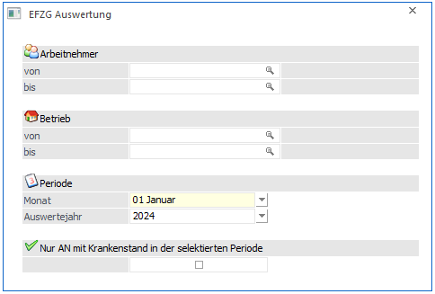
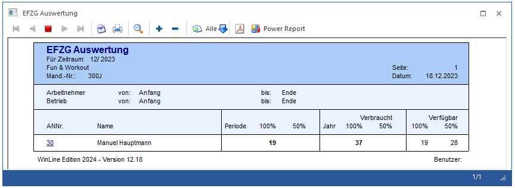
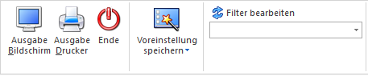

Mittels EFZG Auswertung, die über den Menüpunkt
1 Auswertungen
1 EFZG Auswertung
aufgerufen wird, können jene Krankenstände ausgewertet werden, die Mittels ELDA zugestellt wurden und in die WinLine übernommen wurden.

Ø Arbeitnehmer von - bis
Hier können die AN eingeschränkt werden, für die die Auswertung durchgeführt werden soll.
Ø Betrieb von - bis
Hier kann eine Einschränkung auf einen Betrieb durchgeführt werden.
Ø Periode
Aus den Auswahllistboxen "Monat" und "Auswertejahr" kann der Zeitraum gewählt werden, der ausgewertet werden soll.
Ø Nur AN mit Krankenstand in der selektierten Periode
Wird diese Checkbox aktiviert, wird die Auswertung auf jene Arbeitnehmer beschränkt, die in der gewählten Periode einen Krankenstand vermerkt haben. Ist diese Checkbox nicht aktiviert, wird die Übersicht über alle Arbeitnehmer ausgegeben.

Hinweis:
Wird die Auswertung am Bildschirm geöffnet, steht auf der Arbeitnehmernummer eine "Drill Down" Funktion zur Verfügung. Klickt man auf die Arbeitnehmernummer, wird der Menüpunkt "EFZG-Berechnung" für den entsprechenden Arbeitnehmer geöffnet, um die Krankenstände im Detail betrachten zu können.
Buttons

Ø Ausgabe
Aus der Auswahllistbox kann gewählt werden, ob die Ausgabe am Bildschirm oder am Drucker durchgeführt werden soll. Standardmäßig wird die Ausgabe auf Bildschirm vorgeschlagen, die auch durch Drücken der F5-Taste gestartet werden kann.
Ø Ende
Mittels Ende Button wird das Fenster geschlossen
Ø Filter
Sollen zusätzliche Selektionskriterien und/oder Sortierungen vorgenommen werden, so muss der Filter-Button aktiviert werden (näheres dazu entnehmen Sie bitte dem Kapitel "Filter - Assistent").